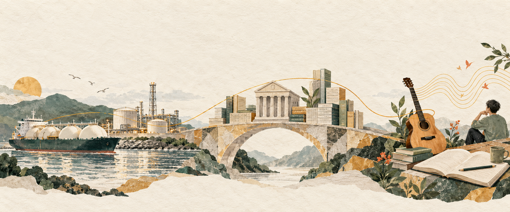

每週回望 / 2026.10.12—10.18
資源如何改變世界，
人如何保有自主？
從能源與資金，讀到制度、創作，與思考的價值。
10.12 — 10.182026 / 週一至週日 / 台灣時間
18篇不重複記事
6個原追蹤議題
7部來源影片
本週脈絡 · 根據記事整理看似分散的閱讀，
看似分散的閱讀，
慢慢靠近同一個問題。
這週，你從美元、公債與能源供應出發，走到產業競爭、國家制衡，最後回到自己的創作與思考。這份週報把 18 篇記事重新串成四條閱讀線：當資源、規則與工具改變，個人與國家如何保有選擇的能力？
記事留下的節奏 · 每根柱代表當日記事篇數
四條閱讀線
跨越原本的議題分類，沿著問題繼續讀。
「人類的價值在於思考，思考重視的就是過程，也就是理解。」
10.18 · AI 與學術研究的記事
這段話，與你在音樂記事裡珍惜探索、練習與共同創作的想法互相呼應。
從閱讀走到實驗 / 10.18
▶開啟音樂實驗 ↗你也把自己的片段交給了 Suno。
你留下作品連結，讓「AI 會如何改變創作」成為一個可以回頭聆聽、比較與反省的經驗。
下週可以帶著這些問題讀。
以下為整理後提出的延伸問題，尚不是你的結論。
- AI 投資的收益，能否比融資成本更快實現？
- 供應鏈分散之後，如何衡量增加的成本與換來的自主性？
- 使用 AI 創作時，哪些環節增加了你的理解，哪些只是省下時間？
回到你的原始記事
同篇跨議題記事已去重保留記事全文與原本的來源連結。點開任何一篇，對照這份整理。